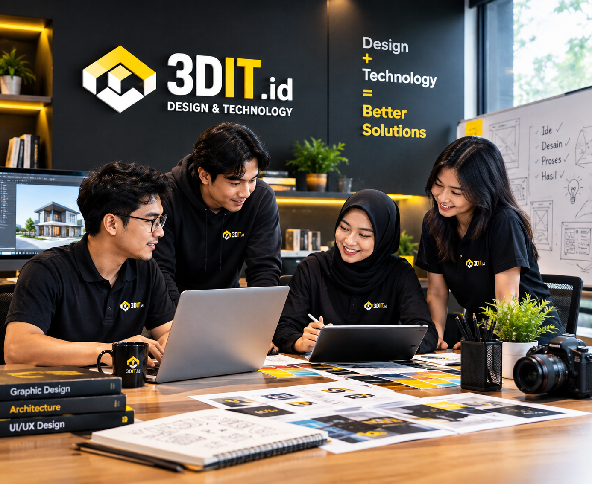

Profile
Tentang 3DIT
Design & Technology untuk kebutuhan visual, bangunan, dan digital yang lebih terstruktur.
Our Direction
Menggabungkan kreativitas dengan ketelitian teknis.
3DIT dibangun untuk menjembatani dunia desain dan teknologi. Fokusnya bukan hanya membuat sesuatu terlihat baik, tetapi juga membuat proses kerja lebih praktis dan mudah digunakan.
Halaman ini adalah ruang profil yang dapat Anda sesuaikan dengan sejarah perusahaan, visi, misi, tim, portofolio, atau sertifikasi.
✓ Clean & modern visual
✓ Workflow terstruktur
✓ Responsive & scalable
✓ Tools yang praktis

Values
Prinsip kerja.
Presisi
Detail kecil diperhatikan agar hasil lebih konsisten.
Sederhana
Kompleksitas teknis dibuat mudah dipahami oleh pengguna.
Berorientasi hasil
Setiap fitur harus punya manfaat yang jelas untuk pekerjaan.